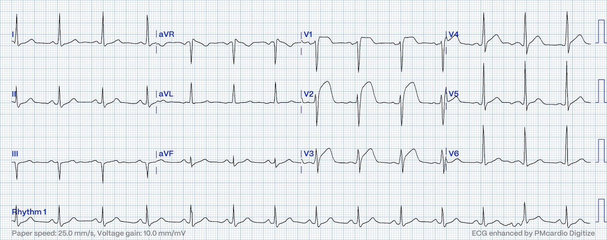
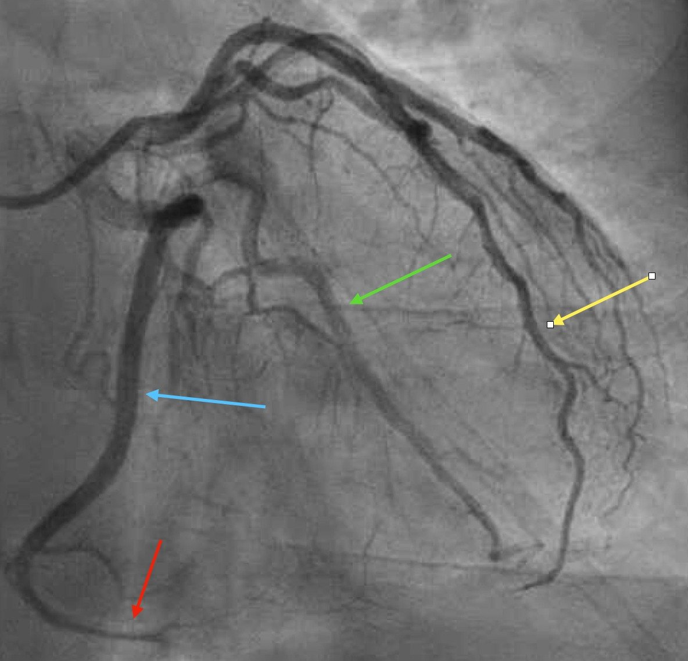
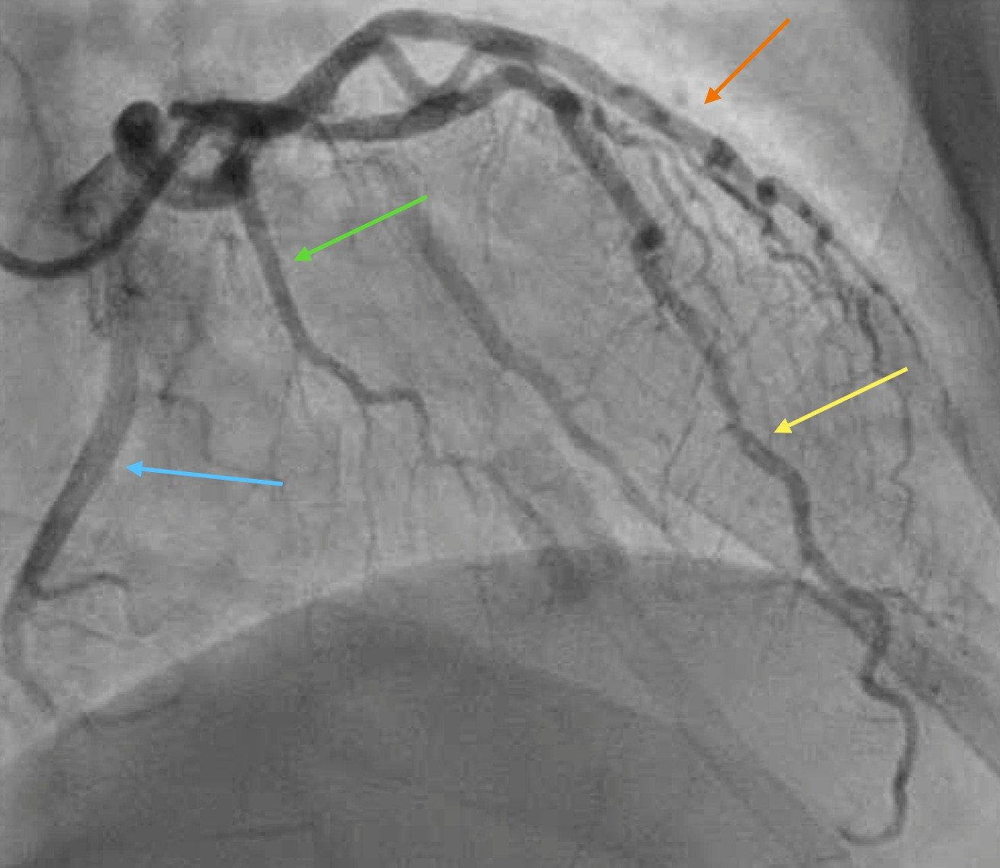
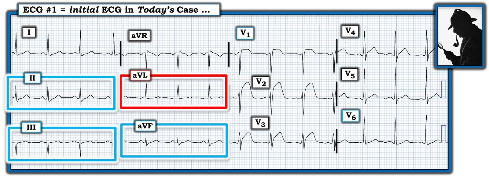

02/08/2024 — OMI thành trước. Chụp mạch vành cho thấy gì?
Bản dịch tiếng Việt của bài "Anterior OMI. What does the angiogram show?" – Dr. Smith’s ECG Blog. Giữ nguyên toàn bộ 6 hình ảnh và 3 video của bản gốc.
Tác giả: Willy Frick
Một người đàn ông 50 tuổi không có tiền sử bệnh lý đến khám vì đau ngực sau xương ức khởi phát cấp tính. Điện tâm đồ của bệnh nhân được trình bày dưới đây.


Dòng tổn thương vùng trước khá rõ ràng. Đây là một OMI STEMI dương tính theo kết quả đọc bằng máy. Độc giả của blog này có thể dễ dàng nhận ra sóng T tối cấp ở các chuyển đạo trước tim, rõ nhất ở V1-V4.
Bạn đoán động mạch thủ phạm là động mạch nào?
Hình chụp mạch vành được trình bày dưới đây
Đây là góc chụp chếch trước phải (RAO) chếch chân (caudal)
Đây là một ảnh tĩnh đại diện của đoạn phim trên. Góc chụp này thường tốt nhất để quan sát LCx, cùng với các nhánh bờ tù và một nhánh sau bên lớn. LAD bị chồng lấp phần nào với các nhánh chéo phía sau nó. Không có tắc nghẽn lớn nào ở đây.


Đây là góc chụp chếch trước phải chếch đầu (cranial)
Đây là một ảnh tĩnh đại diện. Góc chụp này thường tốt nhất để quan sát LAD và các nhánh chéo của nó. LCx và các nhánh bờ tù (OM) không được thấy rõ bằng. Ở đây có bệnh mạch vành không gây tắc nghẽn.


Cuối cùng, đây là góc chụp chếch trước trái (LAO) của RCA
Đây là mỏm cụt còn lại của RCA.
Tắc RCA phù hợp với điện tâm đồ như thế nào?
Câu trả lời là điện tâm đồ thực ra cho thấy OMI thất phải. Hãy nhớ rằng thất phải (RV) là buồng tim nằm phía trước nhất. Đây là một hình cắt ngang trên CT cho thấy điều này.
Ở bệnh nhân này, thiếu máu cục bộ thất phải biểu hiện bằng sóng T tối cấp rất rõ ở các chuyển đạo trước. Một vài manh mối có thể đã gợi ý điều này là:
- Có STE rõ rệt ở V1. Mức độ STE này hơi không điển hình cho thiếu máu cục bộ do LAD. Nếu điều đó xảy ra, bạn có thể sẽ thấy STD ở các chuyển đạo trước tim phía bên — hình ảnh xoáy trước tim (precordial swirl).
- Không có tổn thương rõ ràng ở các chuyển đạo bên cao hay các chuyển đạo trước tim phía bên. Đây là một dòng tổn thương chủ yếu hướng ra trước và sang phải.
- Có sóng R khá lớn ở V4. OMI do LAD thường làm sóng R ở V4 giảm biên độ phần nào.
Ở bệnh nhân này, câu trả lời đã rõ ràng vào thời điểm chụp mạch vành, nhưng “trò chơi tìm thủ phạm” quan trọng hơn nhiều so với một trò mẹo vui để giải trí. Trong bài báo quan trọng này (DOI: 10.1161/CIRCINTERVENTIONS.118.007305) của Heitner và cs., các nhà nghiên cứu đã xem xét kết cục ở 118 bệnh nhân nhập viện với NSTEMI. Tất cả bệnh nhân đều được chụp cộng hưởng từ tim để xác định chính xác vị trí nhồi máu. Toàn bộ bài báo thật đáng kinh ngạc, nhưng trong số nhiều phát hiện khác, các nhà nghiên cứu nhận thấy:
- 31% bệnh nhân bị xác định sai động mạch liên quan đến nhồi máu trên chụp mạch vành
- 15% bệnh nhân có cơ chế bệnh sinh hoàn toàn không do thiếu máu cục bộ, dù đã được kết luận lâm sàng là NSTEMI
- Hai nhóm trên chiếm 46% số bệnh nhân trong nghiên cứu
- Trong số các bệnh nhân được tái thông mạch, 27% chỉ được làm PCI ở các động mạch không phải thủ phạm
Nói cách khác, ở những bệnh nhân không có tiêu chuẩn STEMI, chụp mạch vành xác định vấn đề cực kỳ kém. Dễ thấy rằng nhóm này có thể bao gồm cả những bệnh nhân có hình ảnh OMI đã tái tưới máu hoặc OMI kín đáo.
Hãy tưởng tượng nếu bệnh nhân trong ca này có một tổn thương LAD đoạn gần hẹp nặng, ổn định, chỉ là kẻ đứng ngoài vô can (bystander), và hãy tưởng tượng nếu động mạch thủ phạm của anh ấy đã tái tưới máu tự phát. Dễ hình dung anh ấy có thể đã bị làm PCI nhầm mạch. May mắn là điều đó đã không xảy ra. Dù có thể khó nghi ngờ trước, điều quan trọng là hiểu được vì sao kết quả chụp mạch vành hoàn toàn không đáng ngạc nhiên.
Những điểm cần học:
- OMI thất phải có thể biểu hiện bằng dòng tổn thương vùng trước
- Nghi ngờ tổn thương thất phải khi có STE rõ rệt ở V1
- Điều quan trọng là ít nhất phải có một dự đoán hợp lý về động mạch thủ phạm có khả năng nhất của một ca nhồi máu cơ tim
Xem ca này:
Right Ventricular MI seen on ECG helps Angiographer to find Culprit Lesion (Nhồi máu thất phải thấy trên điện tâm đồ giúp bác sĩ chụp mạch tìm ra tổn thương thủ phạm)

===================================
BÌNH LUẬN CỦA TÔI, bởi KEN GRAUER, MD (2/8/2024):
===================================
Trong số rất nhiều câu nói nổi tiếng của vị thám tử hư cấu vĩ đại Sherlock Holmes, có câu sau — “Không có gì dễ đánh lừa hơn một sự thật hiển nhiên” (trích từ cuốn sách của Sir Arthur Conan Doyle = “The Boscombe Valley Mystery”, 1891).
- Ý nghĩa của câu nói này là đôi khi, một điều hiển nhiên như ST chênh lên rất rõ ở các chuyển đạo trước mà chúng ta thấy trên bản ghi hôm nay lại không phải là kết quả của một STEMI cấp do LAD.
- Vấn đề của việc vội vàng chấp nhận ngay những “sự thật hiển nhiên” — như vậy là nó dễ dẫn tới kết luận vội vàng (premature closure) mà không cân nhắc đầy đủ các khả năng chẩn đoán khác — mà trong ca này nên bao gồm tắc RCA đoạn gần cấp, với nhồi máu thất phải (RV MI) hậu quả là nguyên nhân gây ST chênh lên rõ rệt ở các chuyển đạo trước.
- Chúng ta cần sự tự kỷ luật của một Sherlock Holmes, người luôn kiềm chế không vội đưa ra kết luận — mà thay vào đó, luôn để ngỏ các khả năng khác.
Điểm MẤU CHỐT: Nhồi máu thất phải cấp rất dễ bị bỏ sót — đơn giản vì nó là nguyên nhân gây ST chênh lên vùng trước cấp tính ít gặp hơn nhiều so với tắc LAD cấp. Tuy nhiên, nhận ra nhồi máu thất phải cấp lại cực kỳ quan trọng về mặt lâm sàng — vì điều trị cấp cứu thường đòi hỏi các ưu tiên khác (tức là tránh dùng nitroglycerin; bù dịch khi tụt huyết áp).
- Chúng tôi đã giới thiệu khá nhiều ca nhồi máu thất phải cấp trên Dr. Smith’s ECG Blog (Xem các bài ngày 7 tháng Mười năm 2019 và ngày 10 tháng Năm năm 2024, chỉ kể ra hai bài). Nghĩ tới khả năng nhồi máu thất phải cấp dễ hơn nhiều trong những ca như vậy — khi có ST chênh lên ở các chuyển đạo dưới và ST chênh lên ở các chuyển đạo trước ít rõ hơn, không lan rộng như trong ca hôm nay.
- Khó hơn nhiều để nghĩ tới nhồi máu thất phải cấp từ một điện tâm đồ như trong ca hôm nay (mà tôi đã trình bày lại ở Hình 1) — vì sự thật có vẻ hiển nhiên là ST chênh lên “bắt mắt” ở các chuyển đạo V1 đến V4 (ST chênh lên gần 10 mm ở chuyển đạo V2!) — thúc đẩy kết luận tắc LAD cấp.
- Khi có ST chênh lên ở các chuyển đạo dưới — ghi thêm chuyển đạo bên phải cực kỳ hữu ích để khu trú OMI do RCA cấp ở vị trí đoạn gần của động mạch này, giúp xác nhận nhồi máu thất phải khi thấy ST chênh lên ở chuyển đạo bên phải (Xem Bình luận của tôi trong các bài ngày 19 tháng Bảy năm 2020 và ngày 30 tháng Năm năm 2023). Nhưng trước ST chênh lên rõ rệt ở các chuyển đạo trước — lại không có ST chênh lên ở các chuyển đạo dưới trong Hình 1 (trong các hình chữ nhật màu XANH LAM), vì vậy dễ đánh lừa, khiến bác sĩ lâm sàng không nghĩ tới tổn thương thất phải cấp.
ĐIỂM THEN CHỐT (PEARL) #1: Bài báo quan trọng được Dr. Frick trích dẫn trong phần bàn luận ở trên (Heitner và cs. — Cardiovasc Interven 12(5), 2019) — nhấn mạnh thực tế rằng học cách dự đoán động mạch “thủ phạm” có khả năng từ việc đọc điện tâm đồ ban đầu không chỉ đơn thuần là một bài tập học thuật.
- Bất kể động mạch “thủ phạm” trong ca hôm nay hóa ra là động mạch nào — nhu cầu thông tim đã rõ ràng ngay lập tức từ ST chênh lên rõ rệt ở các chuyển đạo trước trong Hình 1. Nhưng như Dr. Frick đã nói — có thể đã dễ dàng bỏ sót RCA thủ phạm trong ca hôm nay NẾU, chẳng hạn — mạch máu đó đã tái tưới máu tự phát và bệnh nhân có một chỗ hẹp LAD ổn định tình cờ, không phải thủ phạm của biến cố hôm nay.
- Bài báo của Heitner và cs. nêu trên đưa ra một điểm quan trọng là thông tim không xác định đúng động mạch “thủ phạm” ở một tỷ lệ đáng kể bệnh nhân, đặc biệt ở những bệnh nhân OMI cấp mà không có ST chênh lên rõ ràng. Giỏi dự đoán động mạch “thủ phạm” có khả năng có thể giúp bác sĩ can thiệp bằng cách gợi ý nơi cần tìm bằng chứng về động mạch nào đã gây ra nhồi máu.
ĐIỂM THEN CHỐT (PEARL) #2: Tôi xin nhấn mạnh thêm một điểm khác được Dr Frick nêu bật trong phần bàn luận — đó là mặc dù có ST chênh lên ở các chuyển đạo V1 đến V4 — vẫn có những manh mối trong Hình 1 cho thấy động mạch “thủ phạm” không phải là LAD:
- ST chênh lên ở các chuyển đạo ngực bắt đầu (và đã rõ rệt) từ chuyển đạo V1, đạt biên độ ST chênh lên rất lớn như chúng ta thấy ở chuyển đạo V2 trong ca hôm nay — thường chỉ điểm tắc LAD đoạn gần.
- Nhưng trong những trường hợp tắc LAD đoạn gần như vậy — gần như luôn có ST chênh lên đáng kể ở chuyển đạo aVL. Tuy nhiên — hoàn toàn không thấy ST chênh lên ở chuyển đạo aVL trong Hình 1 (trong hình chữ nhật màu ĐỎ).
- Dù ST chênh xuống soi gương ở các chuyển đạo dưới không phải lúc nào cũng thấy trong OMI do LAD — nó thường có khi vị trí tắc LAD cấp ở đoạn gần. Nhưng xét mức độ ST chênh lên ở các chuyển đạo trước trong Hình 1 — mức độ ST chênh xuống ở các chuyển đạo dưới ít hơn tôi mong đợi nếu có tắc LAD đoạn gần.
- Cuối cùng (như Dr. Frick đã nêu) — với hình dạng và mức độ ST chênh lên ở chuyển đạo V1, tôi sẽ mong đợi ST chênh lên nhiều hơn ở chuyển đạo aVR, và ST chênh xuống soi gương nhiều hơn ở chuyển đạo V6 nếu nguyên nhân gây ST chênh lên vùng trước là “Xoáy” (Swirl) do thiếu máu cục bộ vách của một tắc LAD đoạn rất gần (Xem Bình luận của tôi trong bài ngày 15 tháng Mười năm 2022 về Xoáy trước tim).
ĐIỀU CỐT LÕI: Hãy nhớ rằng ngoài OMI do LAD — nhồi máu thất phải cấp là một nguyên nhân khác ít gặp hơn nhưng rất quan trọng gây ST chênh lên vùng trước.
- NẾU bạn đang nghĩ tới nhồi máu thất phải cấp ở bệnh nhân trước mặt — ghi chuyển đạo bên phải có thể nhanh chóng xác nhận nghi ngờ của bạn.
- Khi không có ST chênh lên ở các chuyển đạo dưới — các manh mối nêu ở ĐIỂM THEN CHỐT (PEARL) #2 cho thấy vẫn đáng ghi chuyển đạo bên phải để xác định hoặc loại trừ nhồi máu thất phải cấp.

